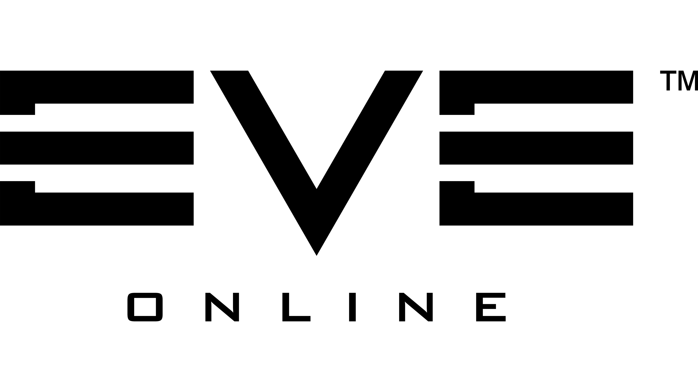
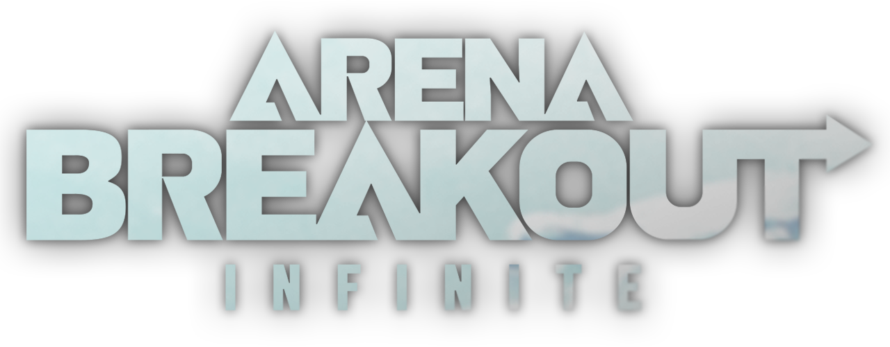
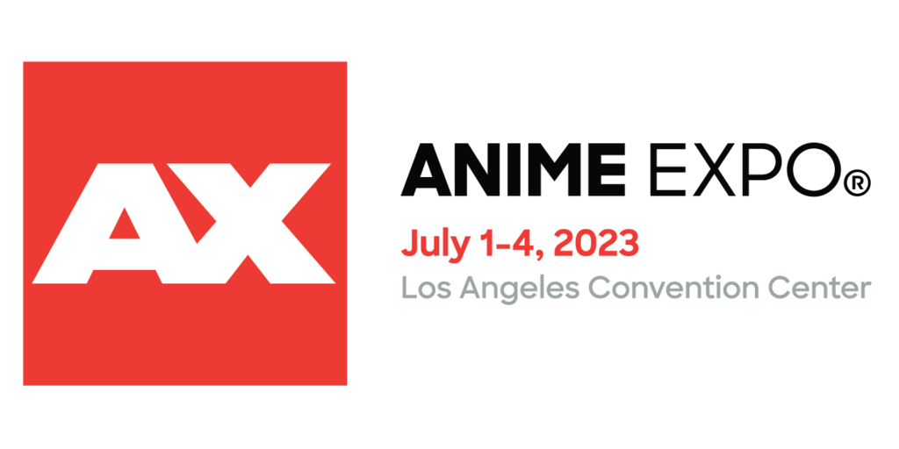
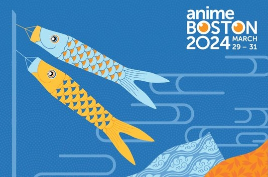
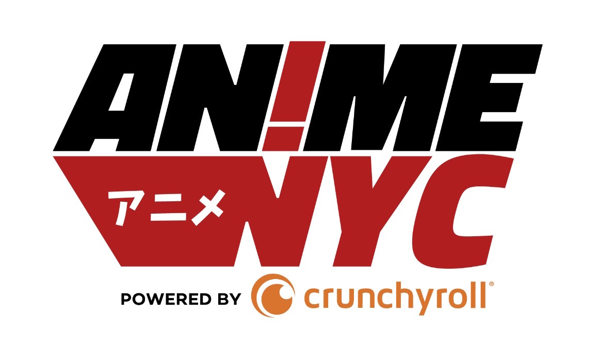
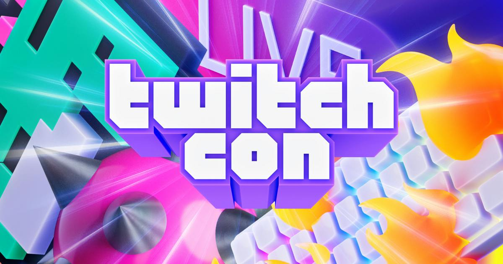

World of Warcraft
I inherited a love of the Blizzard title "World of Warcraft" from my parents, who played the original release of the MMORPG during 2004.I am currently enjoying the new release of WoW:Forever!

Since 2004, I have been a avid enjoyer of video games!


I inherited a love of the Blizzard title "World of Warcraft" from my parents, who played the original release of the MMORPG during 2004.I am currently enjoying the new release of WoW:Forever!


During my final two years of college, I was heavily immersed in the Eve Online world! This sci-fi MMO has you piloting countless different kinds of spaceships in a variety of playstyles.
During my time, I took part in the Guiness World Record breaking Battle of FWST-8!
Fury at FWST-8
One of my favorite extraction shooter games, this game has you in a team of up to three other players with one goal: extract with as much loot as possible!
At the start of high school, I started to play minecraft. It is a timeless classic, and has infinit replay value with modpack additions!
When time allows, I like to travel, mainly to attend anime conventions. Here are some of the conventions I have been to:

Anime Expo was the first major anime convention I travelled for! It is the most well-known anime convention in North America, but also the most crowded.

Anime Boston is a medium sized anime convention in downtown Boston. Thankfully, it was more accessible and had better access to public transit!

Anime NYC was my favorite anime convention to travel for. Slightly smaller than AX, it still had great production value and exhibits! And there was always a lot of things to do outside of the convention.

While not a anime convention, it was still a great event to visit, with great artists and chances to meet people I watch regularly in the livestreaming space!
You can see more of my photography works here:
Photo Gallery